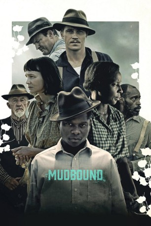
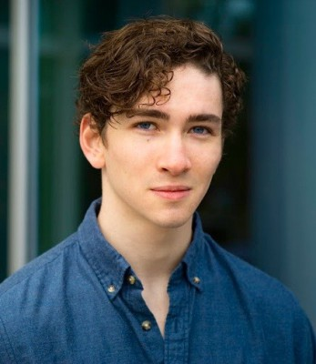
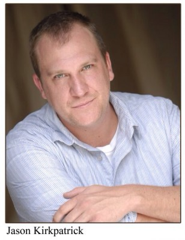

#7570 Mudbound
Auszeichnungen: für 4 Oscars nominiert
 
 IMDB-Wertung: 7.4 / 10
IMDB-Wertung: 7.4 / 10  Tomatometer: 97
Tomatometer: 97  Metascore: 85
Metascore: 85 
Zwei Familien treffen kurz nach Ende des Zweiten Weltkriegs im Mississippi-Delta aufeinander: Die Familie von Hap (Rob Morgan) und Florence Jackson (Mary J. Blige) bewirtschaftet schon seit Generationen ein Stück Land und versucht sich ein freies, selbstbestimmtes Leben aufzubauen. Als Afroamerikaner haben sie es dabei im rassistischen Süden der USA jedoch schwer. Die McAllans sind hingegen weiß und gerade erst aus Memphis an das Mississippi-Delta gezogen und müssen sich erst noch mit den unzivilisierteren Gepflogenheiten, dem eintönigen Leben und der harten Arbeit auf einer Farm arrangieren. Dennoch hat Henry (Jason Clarke) weiterhin große Träume für seine Familie, seine Frau Laura (Carey Mulligan) ist hingegen weit weniger glücklich. Als sich zwei aus dem Krieg heimgekehrte Söhne der Familien, Jamie McAllan (Garrett Hedlund) und Ronsel Jackson (Jason Mitchell), vorsichtig anfreunden, scheint eine Eskalation der schwelenden Konflikte unvermeidlich…
Jahr: 2017
Dauer: 135 Minuten
FSK:
Land: USA Studio: NetflixTonspuren: DD5.1 - ,
Untertitel: Deutsch, Englisch,
Auflösung: 1080p (1920x808) Größe: 3942 MB
Genre: Drama
Regisseur: Dee Rees
Drehbuch: Virgil Williams
Soundtrack:
Darsteller:
 Carey Mulligan als Laura McAllan
Carey Mulligan als Laura McAllan Garrett Hedlund als Jamie McAllan
Garrett Hedlund als Jamie McAllan Jason Clarke als Henry McAllan
Jason Clarke als Henry McAllan Jonathan Banks als Pappy McAllan
Jonathan Banks als Pappy McAllan- Mary J. Blige als Florence Jackson
 Rob Morgan als Hap Jackson
Rob Morgan als Hap Jackson Kerry Cahill als Rose Tricklebank
Kerry Cahill als Rose Tricklebank Jason Mitchell als Ronsel Jackson
Jason Mitchell als Ronsel Jackson Kelvin Harrison Jr. als Weeks
Kelvin Harrison Jr. als Weeks Lucy Faust als Vera Atwood
Lucy Faust als Vera Atwood Henry Frost als Teddy
Henry Frost als Teddy Geraldine Singer als Laura's Mother
Geraldine Singer als Laura's Mother David Jensen als Conductor
David Jensen als Conductor-  Dylan Arnold als Carl Atwood
- Samantha Hoefer als Resl
- Piper Blair als Isabelle McAllan
- Frankie Smith als Marlon Jackson
- Elizabeth Ashling als Pretty Girl
- Kennedy Derosin als Lilly May Jackson
- Elizabeth Windley als Amanda Leigh McAllan
-  Jason Kirkpatrick als Oris Stokes
 Jon Arthur als Lawyer
Jon Arthur als Lawyer- Floyd Anthony Johns Jr. als Church Deacon
- Brady Calhoun als Train Passenger
- Lisha Wheeler als Church member
- Kyle Crawford als Sharecropper / Train Attendant
- Creole Gaudet als 'Dollar Bill' Man
 Patrick Constantine Bertagnolli Jr. als KKK Member
Patrick Constantine Bertagnolli Jr. als KKK Member- Charley Vance als Sheriff Thacker
- Claudio Laniado als Dr. Pearlman
- Frank Wilson als Peabody
 Roderick Hill als Sergeant
Roderick Hill als Sergeant- Brandon J Williams als Bus Passenger , uncredited
- Mudbound als Ruel Jackson
 Rebecca Chulew als Pedestrian
Rebecca Chulew als Pedestrian- Tre Tureaud als Peabody server
- Joshua J. Williams als Ruel Jackson
- Cynthia LeBlanc als Funeral attendee / train passenger
- Elaitheia Quinn als Peabody Patron
 Peter Schueller als Racist Soldier
Peter Schueller als Racist Soldier- Edward Rashad Smith als Jazz Musician
- Ashley Justice als Peabody Dancer
- Kevonte Mcdonald als Server 1
- Darrell L. Shuler als Jazz band member
- James Howard Askin als Peabody Patron
- Donald Mack als Sharecropper dad
- Ronald Pendelton als Church Member , credit only
- Chris D. Henry als Server 2
- Nicholas Beam als Server 3
- Elton LeBlanc als Train passenger / funeral attendee , uncredited
Datei: X:\2017(G-M)\Mudbound (2017, FSK, 1920x808).mkv seit 21.11.2017
Festplatte: HD 2017(A-Z)-2018(A-F)
 Es gibt insgesamt 148 Filme in der Gruppe '2017(G-M)'
Es gibt insgesamt 148 Filme in der Gruppe '2017(G-M)'